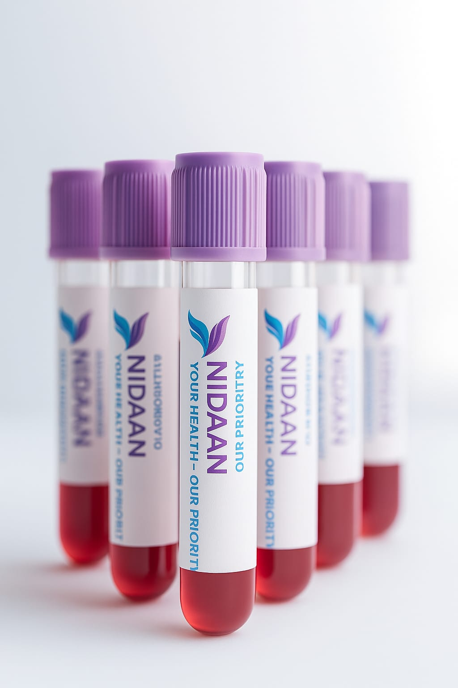
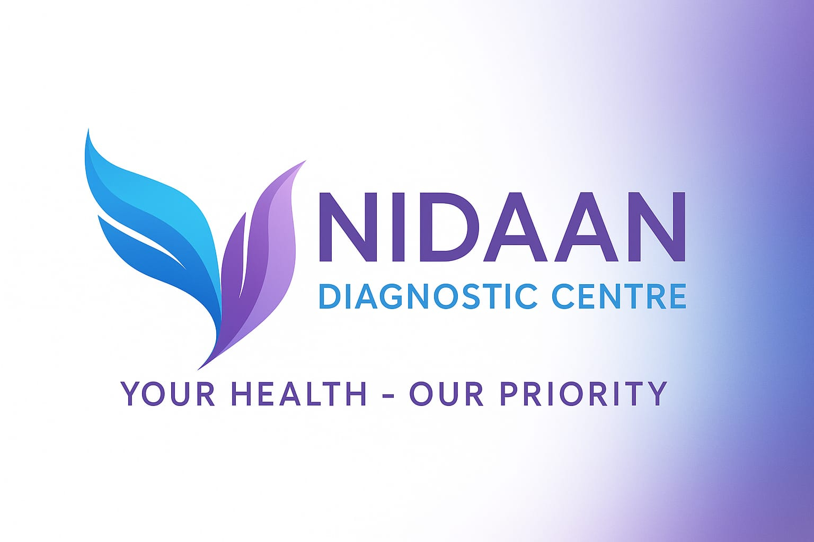
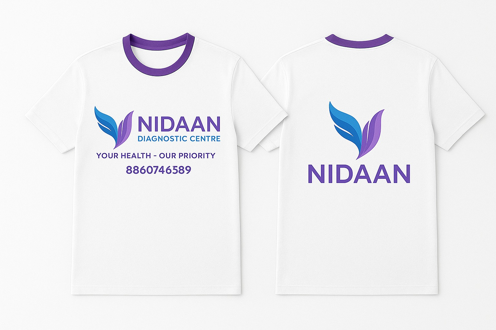

Welcome to Nidaan Diagnostic Centre – a trusted name in advanced healthcare diagnostics. We are
dedicated to providing accurate, reliable, and timely results through state-of-the-art technology and a
highly qualified team of professionals. Our services include comprehensive pathology, radiology, and
specialized home healthcare solutions, ensuring convenience without compromising quality. At Nidaan, we
uphold the highest standards of safety, precision, and patient care, making us a reliable partner for
doctors, patients, and families alike. Your health deserves nothing less than excellence, and that is our
constant commitment.
About Us
At Nidaan Diagnostics Centre, we are committed to delivering world-class diagnostic and healthcare services.
With a team of experienced pathologists, radiologists, and healthcare professionals, we combine modern
technology with compassionate care. Our mission is to provide patients with accurate, timely, and reliable
diagnostic results that help doctors in making the right treatment decisions.
We understand that health is your most valuable asset, which is why we continuously invest in advanced
equipment, safety standards, and patient comfort. Nidaan stands for trust, precision, and quality in
diagnostics.

Our Services
Pathology Tests – Complete blood tests, urine analysis, hormone tests, diabetes screening, and
more.
Radiology & Imaging – Digital X-ray, Ultrasound, ECG, and advanced imaging solutions.
Preventive Health Packages – Full body check-ups, executive health packages, and wellness plans.
Specialized Tests – Cardiac markers, cancer markers, thyroid profile, and vitamin deficiency
tests.
Home Sample Collection – Hassle-free sample collection at your doorstep with same-day reporting.
Whether it’s routine health check-ups or advanced diagnostic needs, Nidaan Diagnostics ensures
accurate results with care and convenience.


Contact Us
We’re here to assist you with your diagnostic needs. Reach out to us for appointments, home collection
requests, or any inquiries.
Address: Nidaan Diagnostics Centre, [Your City, State]